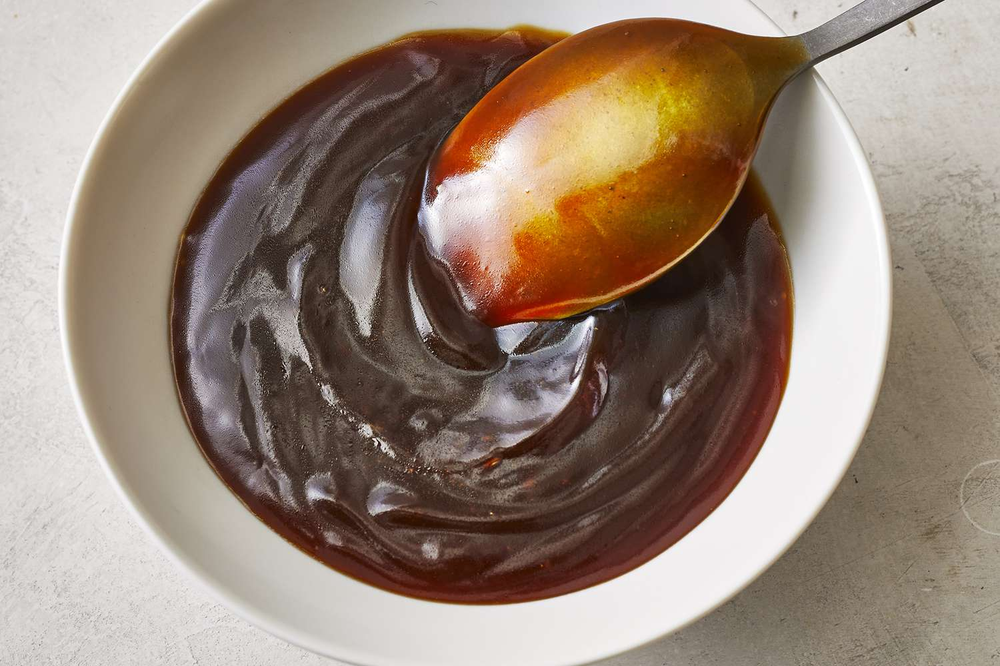

Special Sauce

Tangy Teriyaki Mirin Sauce
This sauce is so easy to make, but also easy to burn if you dont pay attention when cooking.
The finished product is a thick honey like viscosity with a great combination of sweet and salty taste!
Ingredients
- 500ml soy sauce
- 500ml mirin (japanese sweet wine)
- 100ml rice wine vinigar
- 5 teaspoons packed brown sugar
- 2 cloves garlic
- sliced red chili to taste
Steps
- chop garlic and ginger into small slices
- mix soy sauce, mirin, and rice wine vinigar into saucepan on bvery low heat
- geantly stir and after a few minutes add the sugar, garlic and chili
- keep a close eye on the sause as when it starts to reduce it can become thick very quickly and burn.
- when it starts to change consistancy and thicken up, take of the heat and let it cool down as it will thinken alot more once its reached room temperature
- poor into a sealed container and keep in the fidge ready to use on your favorite dishes!